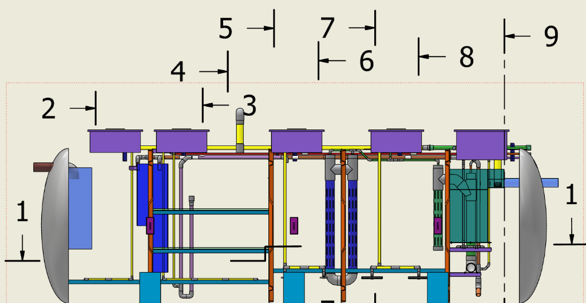
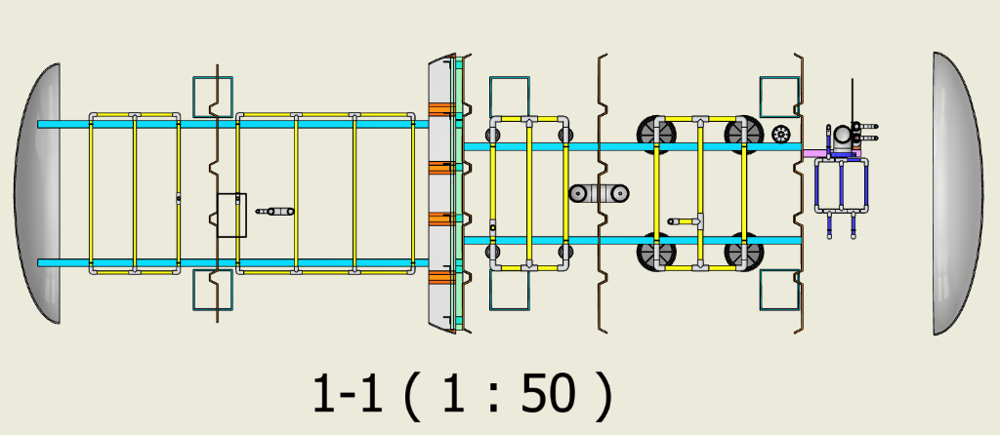
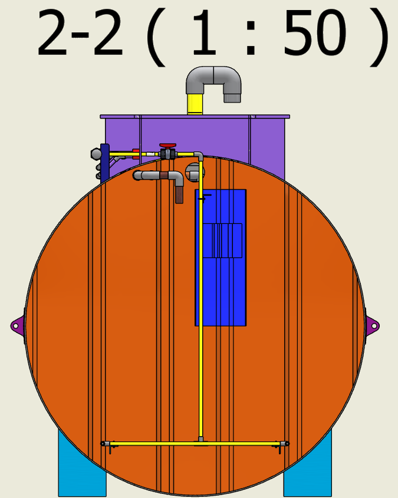
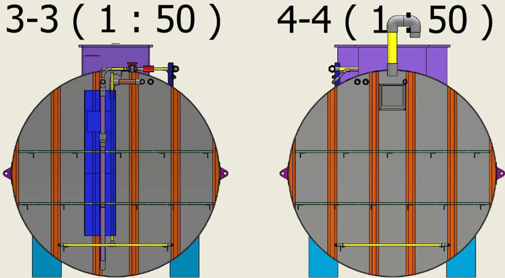
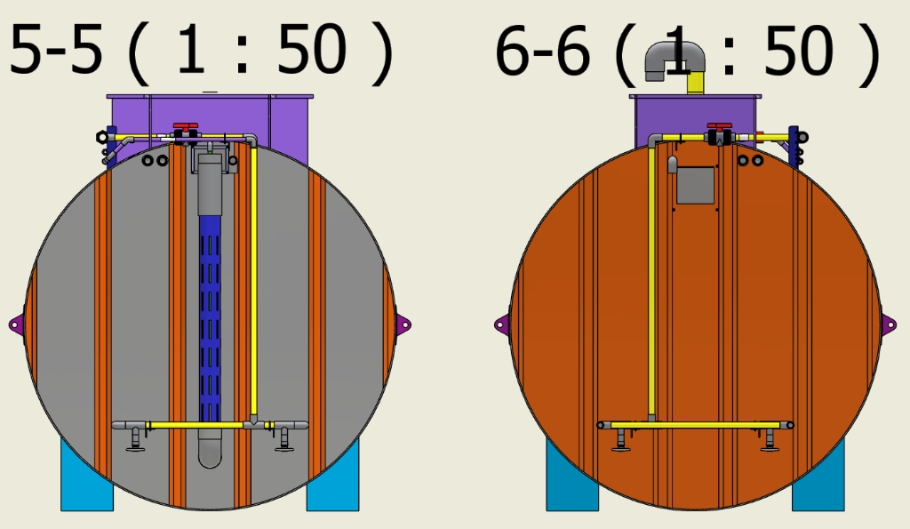
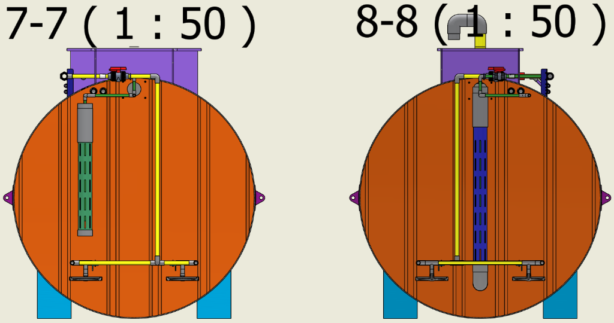
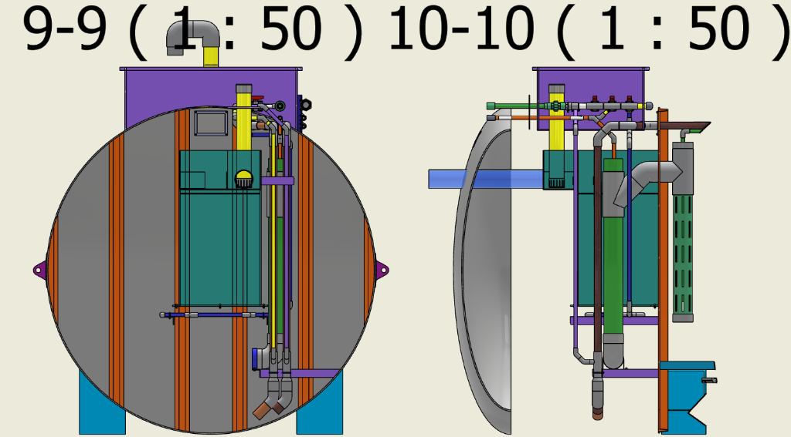
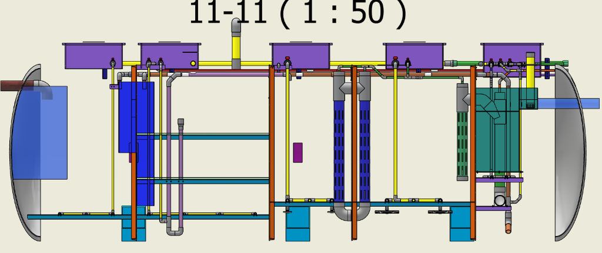

Sổ Tay Hướng Dẫn & Checklist Lắp Đặt Đường Ống Công Nghệ
Hệ thống xử lý nước thải Johkasou 6 m³/ngày - Dự án: IGARASHI WWTP (KCN LONG HẬU)
Đơn vị thi công: OMWATER
Nhà sản xuất bồn thô: H2L
Thời gian ban hành: 20/05/2026
HÌNH A-1: Phối cảnh 3D trực quan mặt cắt khoang bồn Johkasou công nghệ (Isometric View)
Đột phá Công nghệ
Mô hình Trực quan 3D AR
Tài liệu tích hợp mã QR truy cập mô hình thực tế ảo tăng cường (AR). Hỗ trợ kỹ sư giám sát và thợ lắp máy xoay 360 độ, zoom cận cảnh từng mối nối, đĩa khí, cùm treo ống trên thiết bị thông minh ngay tại công trường.
Quét xem 3D AR
• Xoay 360° thực tế
• Trực quan lắp đặt
• Chuẩn 5S Nhật Bản
Bản Vẽ Bố Trí Mặt Bằng Đường Ống Công Nghệ
Hệ thống xử lý nước thải Johkasou 6 m³/ngày - Dự án: IGARASHI WWTP (KCN LONG HẬU)
Tài liệu: Bản vẽ tham chiếu (Reference Drawings)
Phạm vi: Mặt bằng lưng bồn (Top Plan View)
HÌNH A-2: Mặt bằng bố trí hệ thống đường ống công nghệ lưng bồn (Top Plan View)
Ghi chú Kỹ thuật Mặt Bằng
Bản vẽ mặt bằng thể hiện cách bố trí song song của tuyến ống khí chính **uPVC D49** và hai đường ống hóa chất **uPVC D21** chạy dọc trên lưng bồn. Các vị trí van bi điều tiết nhánh khí đứng được định vị ngay tại cổ ga manhole của từng ngăn để thuận tiện cho quá trình vận hành và bảo trì định kỳ.
Bản Vẽ Mặt Cắt Dọc Đường Ống Công Nghệ
Hệ thống xử lý nước thải Johkasou 6 m³/ngày - Dự án: IGARASHI WWTP (KCN LONG HẬU)
Tài liệu: Bản vẽ tham chiếu (Reference Drawings)
Phạm vi: Mặt cắt dọc (Section View)

HÌNH A-3: Mặt cắt dọc kỹ thuật lắp đặt đường ống trong bể (Section View)
Ghi chú Kỹ thuật Mặt Cắt Dọc
Mặt cắt dọc kỹ thuật thể hiện chi tiết cao độ và cách lắp đặt hệ thống ruột công nghệ bên trong lòng bồn Johkasou bao gồm giàn ống sục khí thô ngăn T01, giàn sục khí ngược đáy và sàn lưới đỡ hạt lọc kị khí ngăn T02, giàn đĩa sục khí bọt mịn và hệ thống xẻ khe thu nước ngăn T03, và hệ lưới Inox lọc chặn hạt ngăn T04.
Bản Vẽ Các Mặt Cắt Chi Tiết (Mặt Cắt 1 & 2)
Hệ thống xử lý nước thải Johkasou 6 m³/ngày - Dự án: IGARASHI WWTP (KCN LONG HẬU)
Tài liệu: Bản vẽ tham chiếu (Reference Drawings)
Phạm vi: Mặt cắt chi tiết (1-1, 2-2)

HÌNH A-3a: Bản vẽ chi tiết mặt cắt ngang dọc thân bồn 1-1 (1 : 50)

HÌNH A-3b: Bản vẽ chi tiết mặt cắt đứng ngang thân bồn T01 2-2 (1 : 50)
Bản Vẽ Các Mặt Cắt Chi Tiết (Mặt Cắt 3 & 4)
Hệ thống xử lý nước thải Johkasou 6 m³/ngày - Dự án: IGARASHI WWTP (KCN LONG HẬU)
Tài liệu: Bản vẽ tham chiếu (Reference Drawings)
Phạm vi: Mặt cắt chi tiết (3-3, 4-4)

HÌNH A-3c: Bản vẽ chi tiết mặt cắt đứng ngang vách ngăn và giá thể 3-3 & 4-4 (1 : 50)
Ghi chú Kỹ thuật Mặt Cắt 3-3 & 4-4
Mặt cắt 3-3 và 4-4 thể hiện rõ chi tiết kết cấu các vách ngăn của bồn thô H2L và hệ thống đường ống công nghệ, giá đỡ lưới và hạt lọc kị khí ngăn T02. Đảm bảo thợ thi công định vị cao độ chính xác tuyệt đối theo các thanh FRP định vị sẵn.
Bản Vẽ Các Mặt Cắt Chi Tiết (Mặt Cắt 5 & 6)
Hệ thống xử lý nước thải Johkasou 6 m³/ngày - Dự án: IGARASHI WWTP (KCN LONG HẬU)
Tài liệu: Bản vẽ tham chiếu (Reference Drawings)
Phạm vi: Mặt cắt chi tiết (5-5, 6-6)

HÌNH A-3d: Bản vẽ chi tiết mặt cắt đứng ngang vách ngăn và giá thể 5-5 & 6-6 (1 : 50)
Ghi chú Kỹ thuật Mặt Cắt 5-5 & 6-6
Mặt cắt 5-5 và 6-6 thể hiện chi tiết kết cấu trong bồn ngăn MBBR 1 (T03-1) và MBBR 2 (T03-2). Vị trí giàn đĩa sục khí bọt mịn, hệ thống ống xẻ khe thu nước, cùm treo ống, và cách bố trí giá thể di động (MBBR media) xoáy trộn đều trong lòng bể hiếu khí sinh học.
Bản Vẽ Các Mặt Cắt Chi Tiết (Mặt Cắt 7 & 8)
Hệ thống xử lý nước thải Johkasou 6 m³/ngày - Dự án: IGARASHI WWTP (KCN LONG HẬU)
Tài liệu: Bản vẽ tham chiếu (Reference Drawings)
Phạm vi: Mặt cắt chi tiết (7-7, 8-8)

HÌNH A-3e: Bản vẽ chi tiết mặt cắt đứng ngang cụm bơm Airlift và ống lọc 7-7 & 8-8 (1 : 50)
Ghi chú Kỹ thuật Mặt Cắt 7-7 & 8-8
Mặt cắt 7-7 và 8-8 thể hiện chi tiết kết cấu cụm sục khí thô kết hợp bơm liên thông Airlift ngăn T02 và cụm ống lọc chặn cặn sinh học ngăn T04. Đảm bảo việc hiệu chuẩn lưu lượng khí cấp vào các đường ống đứng uPVC D21 của bơm liên thông được tinh chỉnh chuẩn xác qua hệ van bi trên lưng bồn.
Bản Vẽ Các Mặt Cắt Chi Tiết (Mặt Cắt 9 & 10)
Hệ thống xử lý nước thải Johkasou 6 m³/ngày - Dự án: IGARASHI WWTP (KCN LONG HẬU)
Tài liệu: Bản vẽ tham chiếu (Reference Drawings)
Phạm vi: Mặt cắt chi tiết (9-9, 10-10)

HÌNH A-3f: Bản vẽ chi tiết mặt cắt đứng ngang cụm khử trùng và cửa xả Outlet 9-9 & 10-10 (1 : 50)
Ghi chú Kỹ thuật Mặt Cắt 9-9 & 10-10
Mặt cắt 9-9 và 10-10 thể hiện chi tiết kết cấu cụm phễu thu nước rửa lọc, ống châm hóa chất PAC và Clo viên nén, cùng cửa xả tràn (Outlet) của khoang khử trùng T04. Quy trình đấu nối ống xả đứng và định vị phễu thu phải đảm bảo độ dốc thoát tự chảy thăng bằng tuyệt đối theo đúng thiết kế cơ học.
Bản Vẽ Các Mặt Cắt Chi Tiết (Mặt Cắt 11)
Hệ thống xử lý nước thải Johkasou 6 m³/ngày - Dự án: IGARASHI WWTP (KCN LONG HẬU)
Tài liệu: Bản vẽ tham chiếu (Reference Drawings)
Phạm vi: Mặt cắt chi tiết dọc thân bồn (11-11)

HÌNH A-3g: Bản vẽ chi tiết mặt cắt đứng dọc tổng thể thân bồn 11-11 (1 : 50)
Ghi chú Kỹ thuật Mặt Cắt 11-11
Mặt cắt 11-11 là bản vẽ đứng dọc toàn bộ chiều dài bồn Johkasou, thể hiện sự liên kết đồng bộ giữa tất cả các khoang xử lý từ ngăn lắng cát thô đầu vào đến khoang khử trùng đầu ra. Bản vẽ này giúp thợ thi công kiểm tra tổng thể cao độ của hệ thống đường ống phân phối khí, đường ống tuần hoàn bùn, và hệ thống vách ngăn trước khi tiến hành cố định bồn dưới hố móng.
Giai Đoạn 1: Lắp Đặt Trên Bồn (Above/Top of Tank)
Thực hiện đầu tiên trên lưng bồn để làm chuẩn định vị cao độ và thả các đầu ống đứng xuống
Quy trình: Lắp trước (First step)
Phạm vi: Trục ống chính lưng bồn
✓ HƯỚNG DẪN THI CÔNG: Tuyến trục khí chính và 2 trục hóa chất phải được kẹp định vị hoàn toàn song song dọc theo lưng bồn. Tất cả các nhánh rẽ Tê, van tinh chỉnh và khớp ren cổ ga phải được bắt thăng bằng, chắc chắn trước khi thả các đầu ống nhánh xuống bồn.
Checklist Bảng kiểm tra và nghiệm thu thi công trên bồn
P-ABV-01Cố định 3 trục chính trên lưng bồn: Đo đạc, đặt ống khí chính **uPVC D49** và 02 ống hóa chất **uPVC D21** chạy song song bên dưới trên 05 pát V 50x50 mm composite dọc lưng bồn. Lắp cùm kẹp giữ ống cố định chắc chắn tại 5 pát V, siết chặt đai ốc chống rung lắc.
P-ABV-02Lắp ráp Tê chia nhánh khí manhole: Hàn ráp Tê chia uPVC D49 tại trục ống chính lưng bồn, kết nối các đường ống đứng nhánh cấp khí chui qua các lỗ chờ D42/D34 khoét sẵn trên thành cổ manhole của từng ngăn (T01, T02, T03-1, T03-2, T04). Lắp các van bi uPVC điều tiết trên nhánh.
P-ABV-03Ráp cụm phân phối khí D34 tại Manhole T04: Lắp đặt ống nhánh khí **uPVC D34** dẫn từ trục chính vào cổ manhole T04. Ráp bộ chia từ D34 tách thành **03 nhánh uPVC D21** đi xuống đáy bể để cấp khí cho: (1) Sục rửa lưới lọc, (2) Bơm Airlift 1, (3) Bơm Airlift 2. Lắp đặt 03 van bi uPVC D21 riêng biệt ngay tại cổ manhole để điều tiết độc lập.
P-ABV-04Định vị nhánh hóa chất D21 vào manhole: Lắp đặt rẽ nhánh từ 2 đường hóa chất chính uPVC D21 đi vào các lỗ phi D34 mm chờ sẵn tương ứng trên cổ manhole của ngăn T02 (Methanol), T03-1 (NaOH), và T04 (PAC).
P-ABV-05Lắp đặt ống luồn dây điện (Conduit): Đi tuyến ống điện cứng uPVC D49 luồn cáp điện phao và điều khiển dọc nắp manhole T02 về hộp đấu nối trung tâm.
HÌNH B-1: Bản vẽ mặt bằng bố trí & kích thước định vị kẹp ống lưng bồn (P-ABV-01)
Giai Đoạn 2: Lắp Đặt Trong Bồn - Phần 1 (Inside the Tank)
Thực hiện ráp nối giàn ống khí đáy, sàn lưới đỡ giá thể, đĩa sục khí và sục rửa khe MBBR
Quy trình: Lắp sau (Second step)
Hạng mục: Giàn sục khí & Giá thể T01->T03
⚠ POKA-YOKE THI CÔNG KHUNG SỤC KHÍ ĐÁY QUA MANHOLE 650x650 MM:
Do kích thước cổ ga giới hạn, bắt buộc phải dán keo trước giàn sục khí đáy thành 02 phân đoạn độc lập trên cạn. Sau đó lần lượt thả từng phân đoạn xuống bể qua miệng manhole rồi dùng măng sông uPVC dán keo nối hoàn thiện trong lòng bể, tuyệt đối không cố ép đưa nguyên khung lớn vào gây gãy, móp méo ống.
Checklist Bảng kiểm tra giàn sục khí & lưới giữ giá thể ngăn T01, T02, T03
P-INS-01Lắp giàn sục khí thô T01: Thả 2 phân đoạn giàn ống uPVC D21 sục thô qua manhole T01, dán nối tiếp măng sông, đặt cố định thăng bằng lên 02 thanh V FRP đáy bằng cùm U Inox 304 + tán ê-cu đôi. Hướng lỗ sục khí xiên 45 độ xuống đáy bể.
P-INS-02Lắp giàn ống sục rửa đáy T02: Gia công 2 phân đoạn ống sục rửa ngược uPVC D21 trên cạn, thả xuống manhole T02 và dán nối hoàn thiện. Cố định chắc chắn lên 02 thanh V FRP bằng cùm U Inox 304 + tán đôi.
P-INS-03Đo cắt, lắp sàn lưới nhựa đáy T02: Đo đạc biên dạng cong thành bồn tại T02, đo cắt các tấm sàn lưới nhựa tiêu chuẩn 1.0m x 0.5m khít biên dạng. Đặt lên 06 thanh V FRP đỡ lưới đáy và **dùng dây Inox 304 buộc chặt cố định** sàn lưới vào thanh V.
P-INS-04Thả hạt giá thể & Lưới chặn trên T02: Thả đầy đủ số lượng quả cầu giá thể nhựa kị khí vào T02. Đo cắt và phủ lưới chặn trên sát lớp giá thể cầu, tiến hành **dùng dây Inox 304 buộc chặt cố định** sàn lưới vào hệ 05 thanh V FRP chặn giằng trên để tránh giá thể bị trồi.
P-INS-05Lắp giàn đĩa sục khí bọt mịn MBBR 1 (T03-1): Ghép nối 2 phân đoạn giàn uPVC D21 sát đáy T03-1. Vặn kịch ren các đĩa sục khí bọt mịn nhỏ D140 mm vào giàn. Cố định giàn lên 02 thanh V FRP bằng cùm U Inox 304 + tán đôi.
P-INS-06Lắp ống khí sục rửa khe lọc MBBR 1 (T03-1): Lắp đặt tuyến ống sục khí uPVC D21 mm chạy song song bám sát ống thu nước có khe lọc MBBR ngăn T03-1. Lỗ sục khí hướng thẳng vào khe lọc để tự động thổi sạch cặn bám bẩn.
P-INS-07Lắp giàn đĩa sục khí bọt mịn MBBR 2 (T03-2): Ráp giàn ống khí uPVC D21 đáy ngăn T03-2 qua manhole. Vặn chặt ren các đĩa sục khí bọt mịn to D270 mm. Định vị giàn thăng bằng lên 02 thanh V FRP bằng cùm U Inox 304 + tán đôi.
P-INS-08Lắp ống khí sục rửa khe lọc MBBR 2 (T03-2): Đi tuyến ống sục khí uPVC D21 mm chạy bám dọc ống thu nước xẻ khe MBBR ngăn T03-2, đảm bảo hướng thổi khí thổi bay toàn bộ màng sinh học và cặn bám bít khe.
Giai Đoạn 2: Lắp Đặt Trong Bồn - Phần 2 (Inside the Tank)
Thực hiện lắp lưới Inox ngăn lọc, ráp ống bùn D42 xuyên vách, dán co tê vách D114 và phao que
Quy trình: Lắp sau (Second step)
Hạng mục: Lọc T04 & Tuyến bùn liên vách T01->T04
✓ HƯỚNG DẪN THI CÔNG TUYẾN BÙN D42 DỌC BỒN: Tuyến bùn D42 có hành trình dài 6.5m đi xuyên 4 vách ngăn. Bắt buộc phải **cắt ống D42 thành từng khúc theo chiều dài từng ngăn bồn**, thả qua manhole tương ứng của ngăn, luồn qua lỗ chờ vách phi D60 mm rồi dùng măng sông uPVC dán keo nối liên hoàn lại.
P-INS-09Lắp ống khí rửa ngược đáy T04: Ráp hoàn thiện mạng lưới ống sục khí ngược (Backwash) uPVC D21 mm sát đáy ngăn lọc giá thể, gá cố định chắc chắn lên 02 thanh V FRP bằng cùm U Inox 304 + tán đôi.
P-INS-10Lắp đặt hệ lưới Inox chứa giá thể ngăn lọc T04: Bắt **bu-lông Inox 304** kết nối chặt tấm lưới Inox đáy vào các tai gờ FRP ngăn lọc. Đổ đầy giá thể lọc. Phủ tấm lưới Inox chặn trên lên bề mặt và bắt **bu-lông Inox 304** kết nối chặt tấm lưới trên vào vách ngăn lọc FRP để chống lực đẩy trôi khi sục ngược.
P-INS-11Ráp nối 2 tuyến ống bùn uPVC D42 liên vách: Thực hiện cắt ống uPVC D42 thành các khúc theo độ dài ngăn. Thả từng khúc qua manhole. Luồn khúc ống qua lỗ phi D60 mm trên vách ngăn, dùng măng sông uPVC dán nối liên tiếp lại từ đầu T04 về T02 và T01. Cố định 2 tuyến song song bám sát vách lên pát đỡ FRP.
P-INS-12Lắp ống xả nước từ bơm Airlift T02 qua T03-1: Kết nối ống xả uPVC D42 mm từ đầu xả của bơm Airlift đứng ngăn T02 luồn qua lỗ phi D60 mm vách ngăn xả trực tiếp chảy thẳng sang ngăn MBBR 1 (T03-1). Cố định ống đứng vào thanh V vách ngăn T02.
P-INS-13Ráp Co/Tê lên ống chờ D114 liên vách: Vệ sinh và chà nhám nhẹ đầu chờ uPVC D114 mm đã được H2L đắp composite đúc chết trên vách ngăn. Bôi keo dán PVC và dán các phụ kiện Co hoặc Tê uPVC D114 mm định hướng dòng chảy thủy lực liên vách (T03-1 -> T03-2 và T03-2 -> T04) theo đúng cao độ thiết kế.
P-INS-14Lắp lưới Inox chắn giá thể lỗ tràn D114 vách: Sử dụng lưới Inox 304 chắn tại các lỗ tràn vách D114 mm giữa ngăn T02/T03-1, T03-1/T03-2 và T03-2/T04. Khoan và **bắt bu-lông Inox 304 cố định trực tiếp vào vách ngăn FRP** xung quanh lỗ tràn để ngăn giá thể di động di cư.
P-INS-15Lắp đặt phao que Inox báo mức ngăn T02: Định vị phao que Inox báo mức vào pát đỡ FRP vách bồn T02. Luồn đầu dây dẫn tín hiệu vào ống ruột gà dẫn ra ngoài qua ống chờ D49 trên nắp manhole.
P-INS-16Lắp đặt ống châm Clo viên nén ngăn T04: Thả ống châm Clo dạng uPVC đục lỗ dọc chứa viên nén Clo vào phễu đỡ Inox cố định sát cửa xả tràn Outlet D114 mm phân khu khử trùng T04.
Quy chuẩn kiểm soát chất lượng lắp ráp mối nối và quản lý trực quan trên bồn Johkasou
Tiêu chuẩn: 5S & Poka-Yoke
Đối tượng: Mối nối PVC & PPR
⚠ NGUYÊN TẮC POKA-YOKE PHÒNG NGỪA QUÊN DÁN KEO (ỐNG PVC & PPR):
Trong quá trình lắp ráp, tuyệt đối cấm đút ống cắm vào phụ kiện để "lắp thử" mà không thực hiện dán keo hoặc hàn nhiệt. Bắt buộc áp dụng quy trình kiểm soát chất lượng mối nối gồm 3 bước sau:
QC-1Vạch dấu chiều sâu (Depth Mark): Dùng bút lông vẽ một vòng tròn giới hạn chiều sâu cắm ống tiêu chuẩn trên thân ống trước khi bôi keo dán PVC hoặc đưa vào máy hàn nhiệt PPR, đảm bảo ống được cắm ngập hoàn toàn lút kịch phụ kiện.
QC-2Đánh dấu hoàn thành (Paint Mark): Ngay sau khi hoàn thành việc bôi keo dán hoặc hàn nhiệt mối nối và kiểm tra đạt yêu cầu kỹ thuật, tiến hành dùng bút lông sơn (Paint marker) màu phản quang vẽ một vạch sơn chéo trực tiếp kéo dài qua khớp nối phụ kiện và thân ống để xác thực đã kiểm tra đạt chuẩn.
QC-3Nhãn Flow & Tag van: Dán tem mũi tên chỉ hướng dòng chảy theo đúng hệ thống mã màu (Xanh dương cho khí, Nâu/Đen cho bùn, Vàng/Cam cho hóa chất); Treo thẻ Mica khắc laser tên định danh van bi uPVC bằng xích Inox.
Lưu ý đặc biệt về Quản lý mối nối (5S QC)
Việc quản lý trực quan bằng vạch dấu chiều sâu và sơn kiểm duyệt là bắt buộc đối với 100% mối nối lắp ráp trong và ngoài bồn Johkasou. Phương pháp này ngăn chặn hoàn toàn lỗi bỏ sót dán keo ống nhựa PVC hoặc lỗi hàn non ống PPR.
Đại diện giám sát kỹ thuật của chủ đầu tư và đơn vị lắp đặt công nghệ bắt buộc kiểm tra trực quan các vạch sơn phản quang chéo này trước khi tiến hành nghiệm thu chuyển bước thi công.
Giai Đoạn 3: QA Kiểm Tra Chống Sốc & Ký Bàn Giao
Khâu kiểm soát chất lượng QA nghiêm ngặt trước khi tiến hành đóng nắp và cẩu bồn vận chuyển
Quy trình: Kiểm duyệt xuất xưởng (QA Final)
Phạm vi: Chống thấm vách & Chống rung lắc
⚠ YÊU CẦU CHỐNG SỐC CƠ HỌC & CHỐNG RÒ RỈ TUYỆT ĐỐI KHI VẬN CHUYỂN:
Do bồn được lắp đặt hoàn thiện 100% ruột công nghệ tại xưởng trước khi cẩu vận chuyển chặng đường dài xuống Long Hậu, bắt buộc phải thực hiện trám bít kín 100% khe hở lỗ vách bằng sợi thủy tinh composite và bắt tán ê-cu đôi (Double Nut) khóa chặt toàn bộ cùm kẹp U Inox 304 để tránh tuyệt đối rơi rụng thiết bị trong lòng bồn.
Checklist Bảng kiểm duyệt chất lượng QC xuất xưởng bồn H2L
P-QAS-01Trám bịt kín lỗ xuyên vách ngăn (Composite wrap - H2L thực hiện): Sau khi OMWATER hoàn tất luồn các đường ống xuyên vách ngăn (D42, D21), yêu cầu thợ H2L sử dụng keo composite chuyên dụng kết hợp sợi thủy tinh đắp phủ trám kín 100% kẽ hở giữa ống xuyên và lỗ chờ vách ngăn bồn, đảm bảo chống rò rỉ nước xuyên khoang tuyệt đối.
P-QAS-02Khóa ren ê-cu đôi chống sốc cùm U (Double Nut - OMWATER thực hiện): Rà soát kiểm tra lực siết của 100% cùm U Inox 304 kẹp giữ giàn ống đáy, ống đứng. **Bắt buộc sử dụng 2 đai ốc (Double Nut) đè khóa chặt trên mỗi chân ren cùm U** để chống lỏng ren do rung chấn vận chuyển. Dùng bút sơn đánh dấu chéo mối ren.
P-QAS-03Kiểm duyệt vạch sơn QC mối nối PVC & PPR: Giám sát tiến hành kiểm duyệt toàn diện các khớp nối dán keo PVC và hàn nhiệt PPR dọc bồn. Đảm bảo 100% mối dán/hàn đã có vạch chỉ giới hạn độ sâu (Depth Mark) và có vạch bút lông sơn chéo QC (QC Joint Paint Mark) để xác nhận đã dán keo/hàn thật, loại bỏ hoàn toàn các đầu nối lắp thử quên keo.
P-QAS-04Dán tem nhãn hướng dòng chảy (Flow direction): Dán đầy đủ các tem mũi tên flow dọc lưng bồn theo đúng mã màu quy định (Xanh dương cho Khí D49, Nâu/Đen cho Bùn D42, Vàng/Cam cho Hóa chất D21) phục vụ công tác quản lý trực quan.
P-QAS-05Treo thẻ mica định danh van bi điều tiết: Kiểm tra và móc xích Inox nhỏ treo đầy đủ thẻ mica định danh van bi (`V-T01-AIR`, `V-T02-AIR`, `V-T03-1-AIR`, `V-T03-2-AIR`, `V-T04-AIR`) vào đúng vị trí van bi uPVC điều tiết tại các cổ manhole trên nắp bể.
P-QAS-06Dán decal tên ngăn nắp Manhole: Dán decal ngoài trời cỡ lớn chống tia cực tím ghi rõ tên ngăn bằng song ngữ Việt - Anh trực tiếp lên mặt ngoài 5 nắp manhole theo tiêu chuẩn 5S dự án Nhật.
Biên Bản Nghiệm Thu & Bàn Giao Kỹ Thuật
Biên bản ký nhận bàn giao kỹ thuật lắp đặt đường ống công nghệ bồn Johkasou
Tài liệu: Nghiệm thu xuất xưởng (Handover & Sign-off)
Dự án: IGARASHI WWTP (KCN LONG HẬU)
Nội dung nghiệm thu bàn giao
Bản hướng dẫn lắp đặt đường ống công nghệ bồn Johkasou này làm căn cứ kỹ thuật để đơn vị sản xuất bồn thô (H2L) và đơn vị lắp đặt công nghệ (OMWATER) phối hợp kiểm soát chất lượng xuất xưởng của hệ thống.
Hai bên xác nhận rằng tất cả các hạng mục lắp đặt cơ khí, đĩa phân phối khí, đường ống công nghệ, các vách ngăn của các khoang xử lý sinh học từ ngăn lắng thô đến ngăn khử trùng đã được lắp ráp đúng thiết kế kỹ thuật của dự án IGARASHI WWTP (KCN LONG HẬU).
Biên bản này được lập thành hai bản có giá trị pháp lý kỹ thuật ngang nhau làm hồ sơ quản lý chất lượng QA/QC cho toàn bộ hệ thống xử lý nước thải trước khi tiến hành cẩu lắp đặt và gia cố ngầm tại hiện trường.